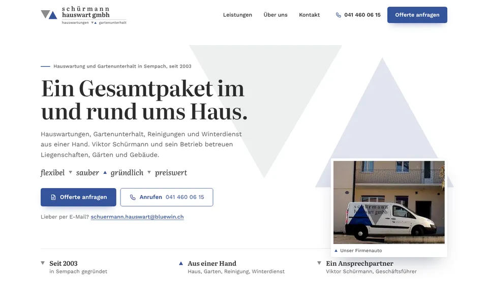
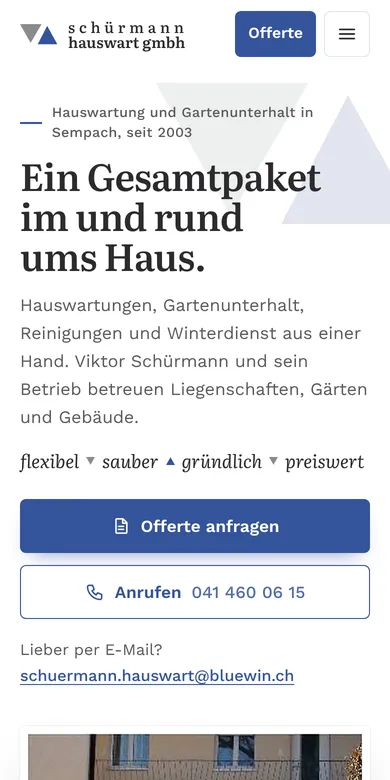

Design A
Flexibel, sauber, gründlich
Hell und ruhig, wie Ihre heutige Seite gemeint ist: Die zwei Dreiecke aus Ihrem Logo liegen gross und blass im ersten Bild und schieben sich beim Laden zusammen, davor steht Ihr Motto in vier Worten. Danach folgen Ihre fünf Leistungen mit eigenen Fotos und Symbolen, Viktor Schürmann als Ansprechpartner und das Anfrageformular mit Telefon und Mail.
- Hell und ruhig
- Logo-Dreiecke
- Motto in vier Worten